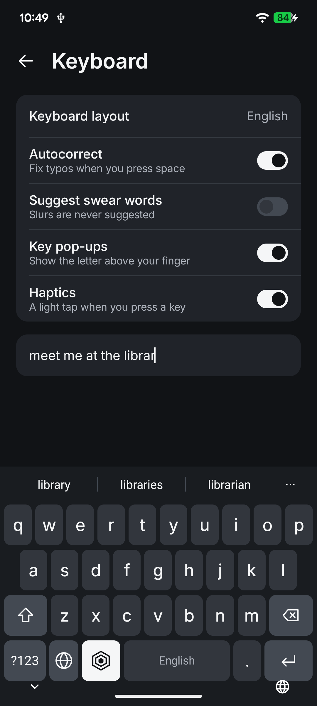

What it is
- System-wide keyboard: hold the Hex key to dictate, tap for hands-free, ✕ discards.
- Offline-first: Tiny model bundled and working from install; one 190 MB Small download for best accuracy.
- Dictation in English, Spanish, German and Norwegian, with a Tiny/Small model picker.
- Typing assistance: suggestions, autocorrect, layouts, pop-ups and haptics.
- Private by construction: voice and words never leave the phone, no history, no telemetry, no ads.
Screens
